Responsive Web Design Process
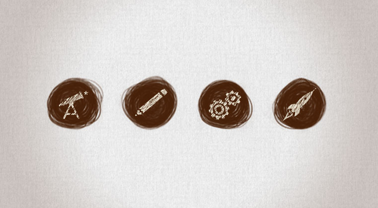Every project, big or small, goes through our patented (not really patented) process. We call it the four Ds: discovery, design, development, and deployment. We tie all of this together to form our responsive web design process. The deliverables for your project might vary, but here's an idea of what you can expect from us.
Discover
1. Kickoff & Project Charter
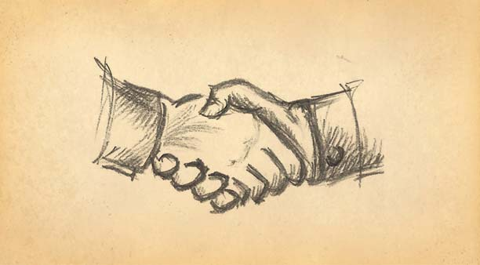First things first: let’s meet up and get to know each other. From our early meetings and research, we'll establish communication protocols, milestones and timelines, deliverables and scope, roles and expectations.
2. Project Analysis
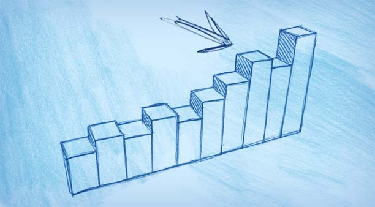We will work with you to help determine the requirements of the project, from a technical, creative, and organizational perspective. We’ll analyze content, writing style, visual design, and interface design, and make sure we understand everything there is to know about your industry. Our project analysis will guide us in understanding where your organization has been, what it is currently doing, and where it wants to go in the future. This guides us in tailoring a solution that is effective and sustainable. We will also spend time getting to really understand your brand by analyzing past and present marketing materials, discussing future marketing strategies, and aligning them with your web project.
3. IA & Content Strategy
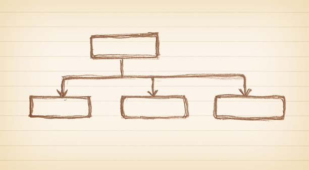Using the knowledge gained from our discovery conversations, we will audit existing content both quantitatively and qualitatively. What exists on your current site? And, more importantly, is it doing what you need it to do? We'll create a site map for your project and show where everything belongs. This process will inform what and how we communicate, and establish the features your users need. Well-planned, well-structured content will help us create both the interaction and visual design systems.
4. Search Strategy

We'll develop a document summarizing best practices for Search Engine Optimization, including page structure, URL syntax, meta data, and content hierarchy. This will help your site make sense to both human and robot (aka Google) users.
5. Strategic Direction
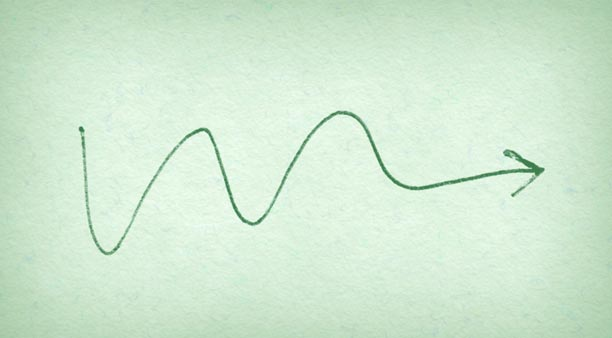All of the information found during the discovery phase will be complied into a concise document that outlines the search, content, technical, and creative strategies. This document will act as the project map, keeping all team members in line with a focused strategy.
Design
6. UX Sketches
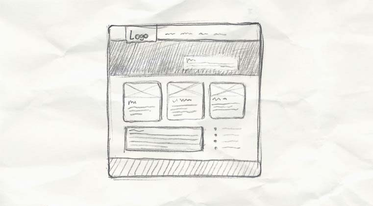We will work with you through an iterative process to create rough wireframes, or UX sketches, for key views. This will help establish the design system, while communicating a sense of the functionality. This is also where we decide on the break points for the responsive design.
7. Page Tables
One of our main goals is to keep content independent from design or presentation. Your content should never be dependent on a layout to work properly. So, along with wireframes, you will receive a set of page tables for key content pages. Page tables identify each content area in priority order, and identify the most important messages to communicate in each area.
8. Interaction Design
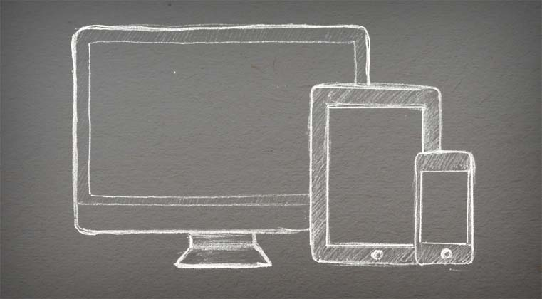Once we all agree on where we’re headed, we’ll wireframe and document the remaining views, with the functionalities established by the page tables and feature list. Each and every view scenario will be documented to visualize all the content and features we’ve planned. Along with that we’ll create rough greybox HTML prototypes to demonstrate responsive interaction patterns.
9. Visual Design
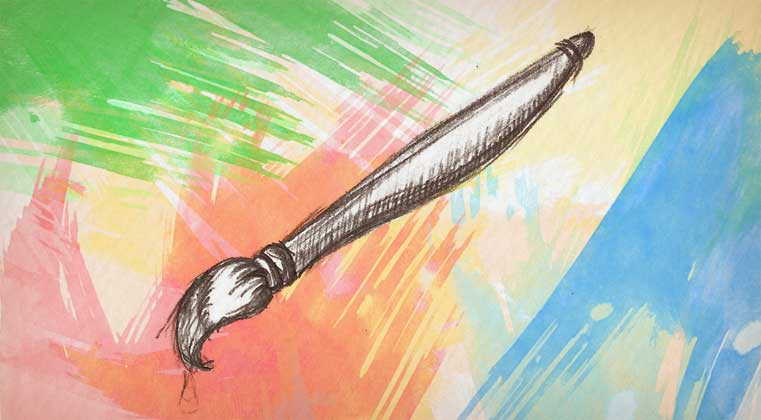With functionality fully documented in the wireframes, we’ll layer in the branding elements, colour palettes, and typography that give each site its unique look and feel. Through an iterative process between our team and yours, we’ll make all the big decisions about typographic hierarchy, vertical rhythm, and interface details. We can create static visual mockups, browser-based prototypes, or both.
10. Styleguide / Documentation
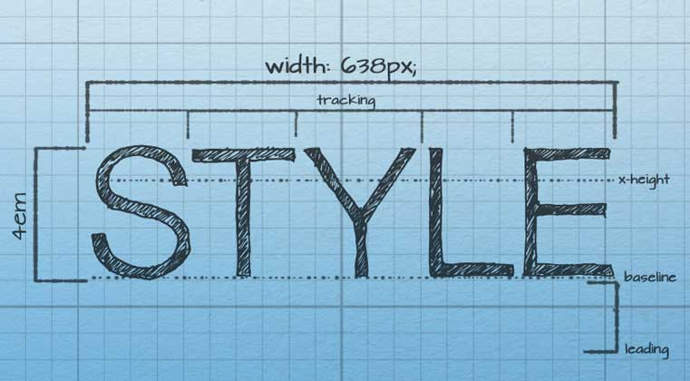Next, we’ll create a styleguide that will document the design system so that they can be properly implemented. All the details from the grid to hover/touch states to typography styles to content messaging will be detailed. This guide will demonstrate the design thinking and personality of the system. Depending on the complexity of the site, this could be created in an interface harmony canvas.
Develop
11. HTML or Theme Build
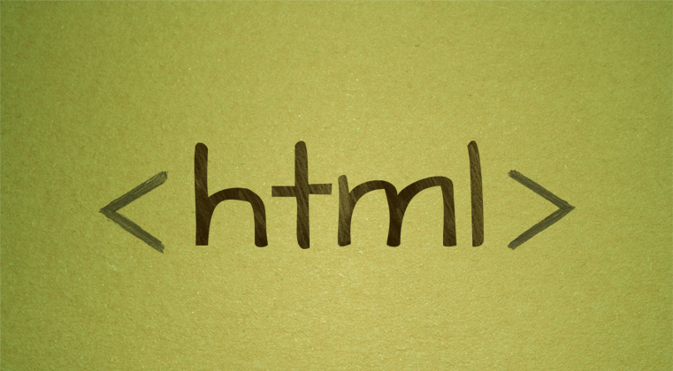Now it’s time to get down to business and build HTML/CSS/JavaScript themes: functional, browser-tested, HTML pages ready for testing. We’ll make sure all content is governed by CSS and meets W3C standards. We’ll use JavaScript for interactive elements, rather than Flash or Silverlight. We’ll also help you adhere to best practices for online readability, and include a print CSS for readers that want to print out your content.
12. CMS Build & Template Implementation
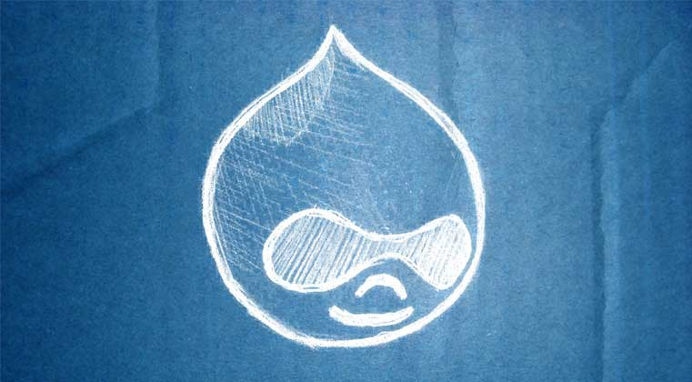At this stage, the technical architecture will be built out on a system like Open Text Web Site Management or Drupal 7, depending on your organization’s needs. We’ll build out all of the site’s modular elements and e‐commerce components, and set up a workflow process that will help you maintain your content over the long term. This process goes hand-in-hand with the CMS Template Implementation, which will integrate the HTML templates into the design or theme layer. By the time we’re done, everything will be looking good and working great!
13. Cross-Browser/Device Testing
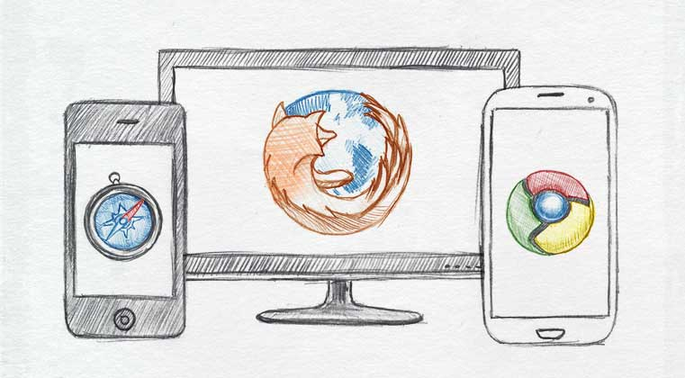Here's where we test and demonstrate how page templates will render in major web browsers and mobile devices (i.e. iPad, iPhone, Blackberry, Android, etc). It is important to understand that the design will be appropriate for each device, but may be slightly different due to device specs and experience. It’s not about making everything look the same, it’s about creating a coherent experience across all devices.
Deploy
14. Content Migration
At Yellow Pencil we love to provide support and training for content authors during content migration. We believe in helping our clients create and maintain useful, usable content. Depending on your organization’s needs, and our audit of your current website, we’ll help you define the scope of the content migration phase. As we all know, a website without content is a black hole of sadness. Content #FTW!
15. User Acceptance Testing
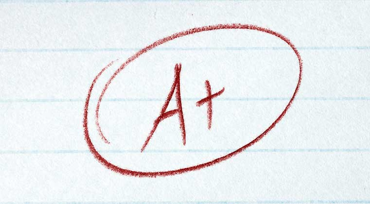User Acceptance Testing (UAT) helps us confirm that your new site meets the objectives and requirements we defined early in the project. It's like moving into a new house – you need time to discover how everything works and get comfortable with living there. You’ll need time to come to terms with how your content fits into the design and workflow, and make any adjustments and edits you need.
16. Documentation & Training
We will prepare text and video documentation on to help you understand and use your new CMS and site. We will generally provide a period of user acceptance testing following the official “handoff” of the website, to make absolutely sure that everything meets your needs. We’ll also provide additional support and training where necessary, and take care of any bug fixes to make sure that your website is ready for launch.
17. Launch Plan & Release
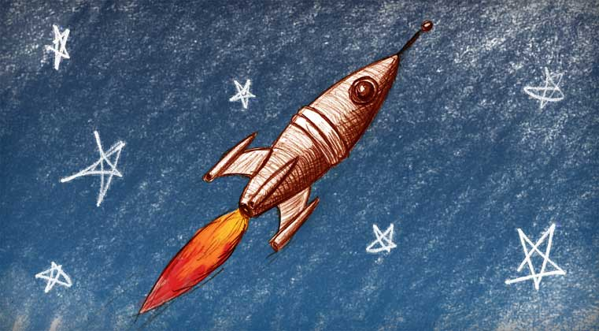So close! Next up, our team will create a launch plan to archive the current website (if needed) and release the new website to the public, as well as a quality checklist to ensure that all project requirements are met. We’ll make sure that the new website is submitted to the appropriate search engines, and that web analytics are installed and configured. We'll also work with our smarty-pants friend at the Status Bureau to make sure you understand how to access and act on web analytics reports.
18. Start of Operational Plan
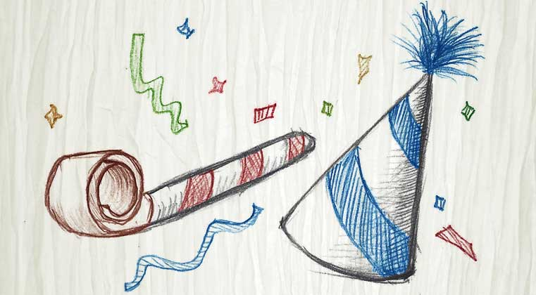A website is a living thing that continues to grow and change throughout its lifecycle. So in some ways, your work is never done (sorry), but achieving a milestone like this definitely deserves a party! Even though this is just the beginning of the real life of the website, it’s good to celebrate after all this hard work. Nice work team. Now back to work!